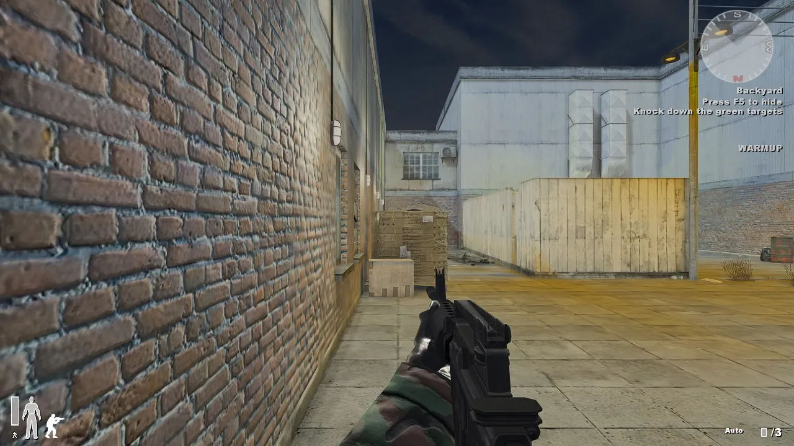
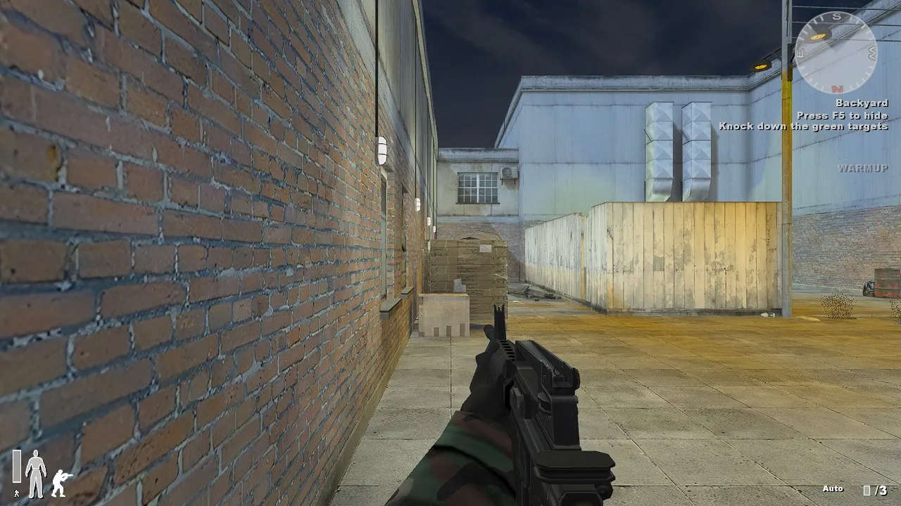
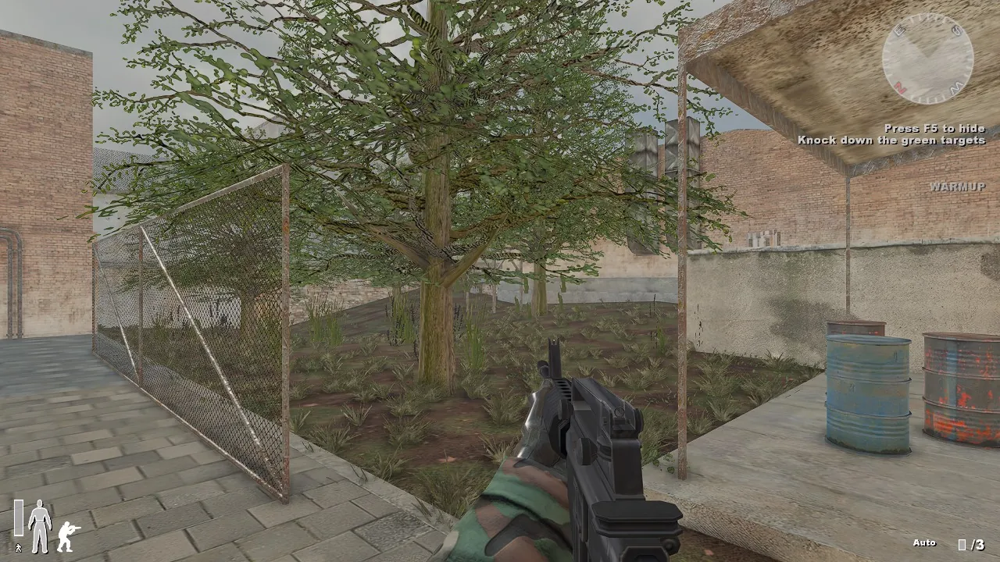
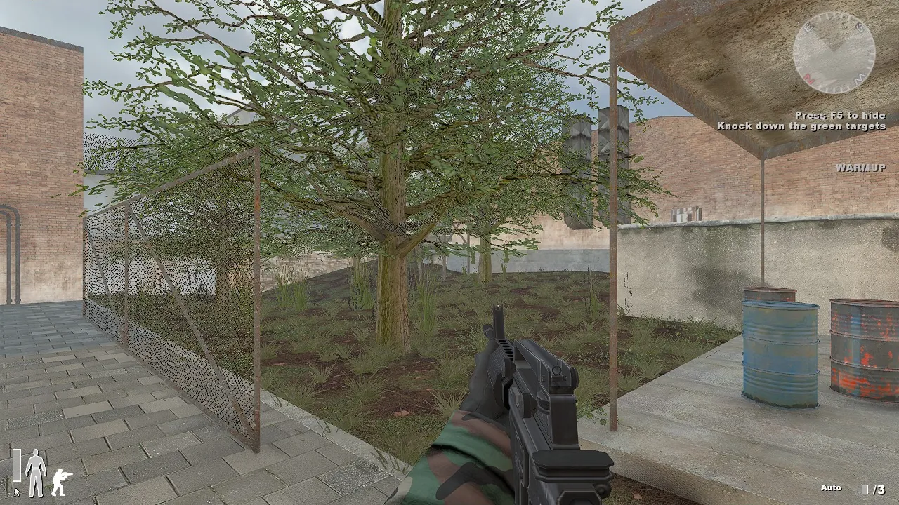

Nieuw licht voor oude maps
De Ultra-preset brengt moderne belichting, echte oppervlaktematerialen en zonneschaduwen naar elke map op DirectX 12. Zo hebben we dat gebouwd zonder te veranderen hoe TC:E speelt.
Elke map in Platinum is gebouwd voor een renderer uit 2003. De geometrie, de zichtlijnen en de donkere hoeken horen bij hoe het spel speelt, en spelers hebben ze jarenlang leren kennen. Toen we de graphics gingen moderniseren, was de eerste regel dan ook eenvoudig: de nieuwe look mag veranderen hoe een map aanvoelt, nooit hoe hij speelt.
Die regel bepaalde alles wat volgt. Het werk zit in een nieuwe preset, Ultra, alleen op DirectX 12. Low, High en OpenGL renderen precies zoals voorheen, en dat controleren we bij elke build.
Fase één: de look
De eerste fase veranderde hoe licht op je scherm in kleur wordt omgezet. Ultra gebruikt filmische tonemapping, die felle luchten en diepe schaduw in hetzelfde beeld aankan zonder een van beide te laten uitbranden, en automatische belichting, zodat je ogen net als in het echt even moeten wennen als je uit een donkere gang het daglicht in stapt.
Daarbovenop zit een kleurcorrectie. Die hebben we bewust ingetogen gehouden. Een zware kleurcorrectie ziet er goed uit in een trailer en slecht in een vuurgevecht, omdat spelers erdoor in de achtergrond verdwijnen. Elke keuze is getest tegen één vraag: zie je de vijand nog?
Fase twee: echte oppervlakken
In het originele spel is een bakstenen muur een platte foto van bakstenen. Licht valt op elke pixel op dezelfde manier. Ultra geeft elk oppervlak op de zes maps een set materiaalmaps: welke delen naar voren komen en welke wegzakken, hoe ruw of glad het is, en of het metaal is. De renderer gebruikt ze om elk oppervlak te belichten zoals het echte materiaal zou doen.


High UltraDe materiaalmaps worden met een offline tool uit de HD-textures gegenereerd, niet met de hand geschilderd, dus een paar oppervlakken zien een geschilderde vlek aan voor reliëf. Daar blijven we aan schaven. De maps worden geleverd als één extra pakket. De eerste keer dat je een map op Ultra laadt, comprimeert het spel de materialen voor jouw videokaart en bewaart het resultaat, zodat elke volgende keer laden snel gaat.


High UltraFase drie: licht en schaduw
De laatste fase voegde toe wat de meeste spelers als eerste zullen opvallen: realtime schaduwen van de zon. Spelers, objecten, wapens en de wereld zelf werpen ze nu, scherp van dichtbij en zachter in de verte. Kleine contactschaduwen zetten objecten stevig op de grond, en lichtbundels door mist zijn er als optie.
Dat leverde een echte ontwerpvraag op. Op Ultra werpen andere spelers ook zonneschaduwen, en een schaduw kan dus iemand verraden die net om de hoek staat. We hebben besloten dat zo te laten. Zo werkt licht nu eenmaal, het beloont oplettendheid, en beide kanten krijgen dezelfde informatie. Serverbeheerders die een strikt klassieke wedstrijd willen, kunnen de klassieke look voor iedereen afdwingen met sv_forceClassicVisuals 1.
Eerlijk door ontwerp
Elke fase doorliep dezelfde controles voordat hij in de buurt van een release mocht komen:
- Zichtbaarheid. Spelers in rook en op de donkerste plekken van elke map moeten op Ultra net zo goed te zien zijn als op High.
- Prestaties. Gemeten op elke map. De materialen kostten op onze testmachine hooguit ongeveer een halve milliseconde per frame.
- Geheugen. Ultra gebruikt ongeveer 150 tot 190 MB extra videogeheugen.
- Geen achteruitgang. Low, High en OpenGL beeld voor beeld vergeleken met de vorige release.
Anti-aliasing kiest zichzelf op Ultra: DLAA op RTX-kaarten met 12 GB videogeheugen of meer, en TAA op alle andere.
Wat het voor jou betekent
Draait je pc High zonder moeite, probeer Ultra dan eens via de graphics-presets in de launcher. Speel je het spel liever precies zoals het er altijd uitzag, dan verandert er voor jou niets. Hoe dan ook ziet elke speler dezelfde map, dezelfde zichtlijnen en dezelfde vijanden.
Vragen over dit artikel? Stel ze aan het team op Discord.